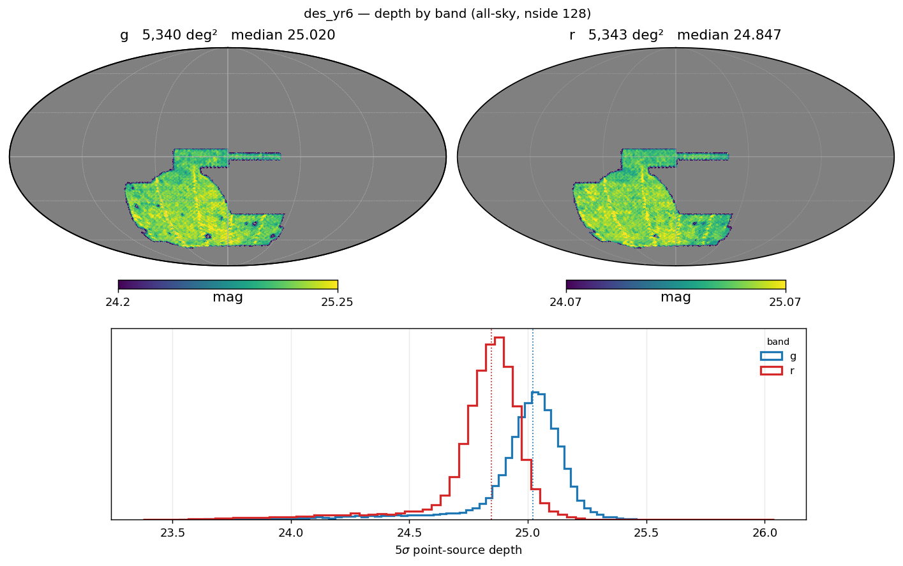
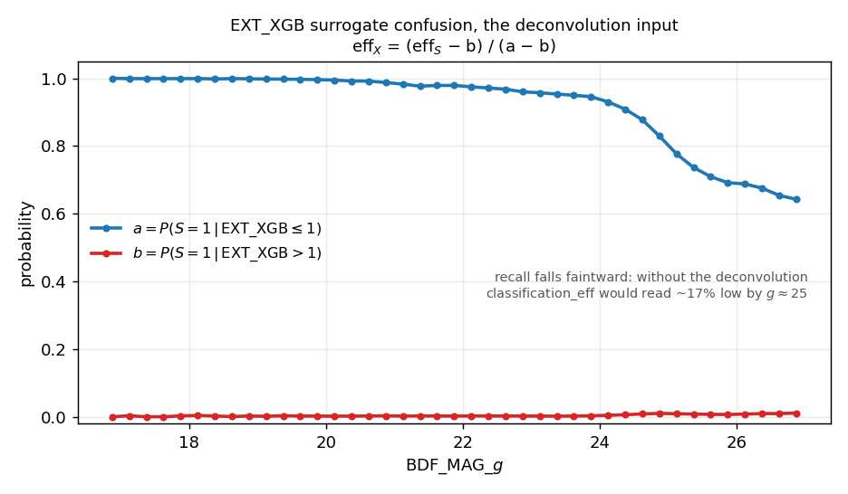
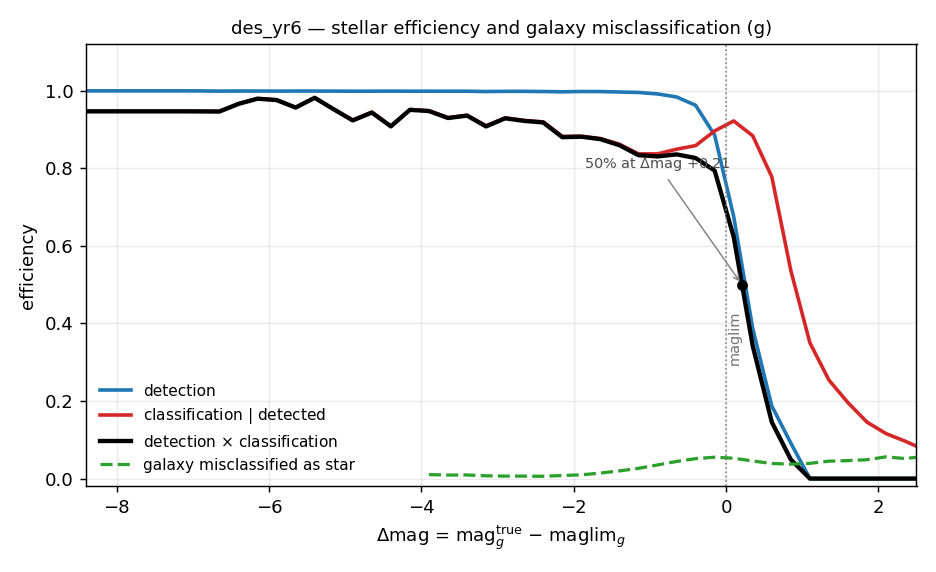
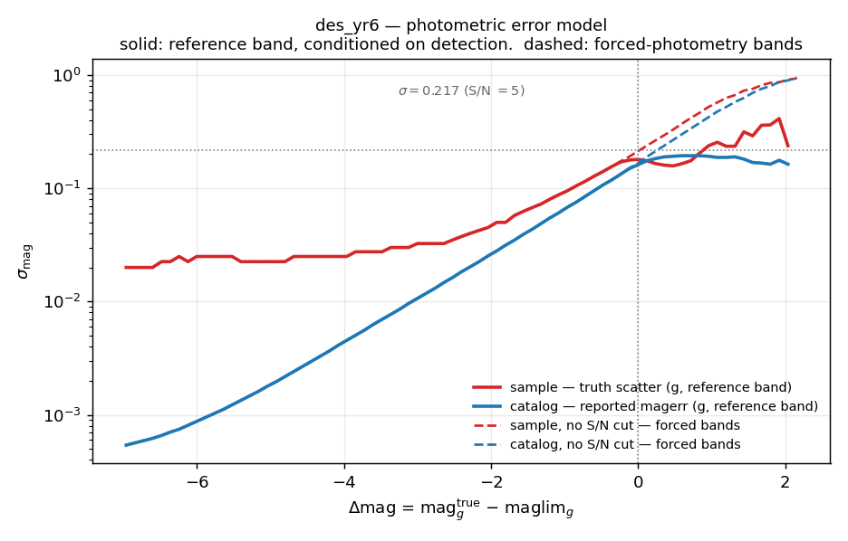
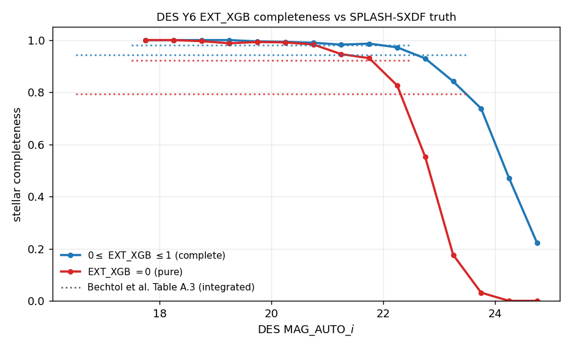

DES#
DES is supported by StreamObs.
Available releases#
Release |
Bands |
Footprint |
Reference band |
Median reference-band depth |
|---|---|---|---|---|
|
griz |
5,340 deg² (shipped maglim map) |
g |
25.025 |
The survey dataset is described in Bechtol et al. 2025 and the catalogues are documented and publicly available from DESDM.
Products#
All of the selection-function products are derived in-repo from the DES Y6
Balrog synthetic-source-injection catalogue
(Anbajagane et al. 2025) by
scripts/des/balrog_selection_function.py. The method, the evidence behind each
choice and the runbook are in Selection functions from Balrog (DECam surveys); see
Creation below for the per-release summary.
File |
Contents |
|---|---|
|
truth-anchored S/N = 5 depth maps |
|
stellar detection + classification efficiency vs |
|
sample photo-error curve — truth scatter, drives the noise draw (reference band) |
|
catalog photo-error curve — reported |
|
sample, no S/N cut — the noise draw for forced-photometry bands |
|
catalog, no S/N cut — reported |
|
fraction of detected true galaxies classified as point sources |
|
pre-afterburner provenance |
|
counts, anchors and convention flags for the run |
Reference band is g. The completeness and photo-error curves are keyed to
delta_mag = mag_true − maglim(pixel) and applied band-independently, so colour
is carried by the per-band depth maps rather than by separate per-band tables.
Depth and bands#
Truth-anchored medians:
band |
truth-anchored depth |
|---|---|
g |
25.025 |
r |
24.850 |
i |
24.402 |
z |
23.754 |
Footprint of the shipped maglim map is 5,340 deg², at nside 128
(des_yr6_maglim_{g,r,i,z}_nside128.fits.gz).
Y is not supported. The Y6 Balrog injects griz, so a Y depth map cannot be
truth-anchored on the same footing and no Y efficiency or photo-error curve can
be derived at all. The legacy Y-band healsparse map was removed rather than
shipped on an unanchored scale. u was never part of DES.

Pixels deviating more than 1.5 mag from their band median are masked when the
maps are written: a small number of physically impossible values (r reached
28.99, four magnitudes deeper than its own median) survive in the input
healsparse maps, and an injection landing on one would get a nonsense
delta_mag.
Photometric errors#
Four curves ship, not two. The reference band g uses the sample/catalog
pair, which is measured on the detected population, since g’s own photometry is
conditioned on its own detection. Every other band (r, i, z) is forced
photometry — measured at the g position, not conditioned on its own detection —
and uses the _nocut pair instead.
Survey.get_photo_error(band=...) picks the matching pair automatically and
raises rather than guessing if the required curve for a non-reference band
is not loaded, instead of silently applying the detected-population curve to
forced photometry.
Using it in streamobs#
Configured by config/surveys/des_yr6.yaml, data in data/surveys/des_yr6/:
from streamobs.surveys import SurveyFactory
survey = SurveyFactory.create_survey(
"des",
release="yr6"
)
maglim = survey.get_maglim("g", pixel=pix)
completeness = survey.get_completeness(
"g",
mag,
maglim
)
photo_error = survey.get_photo_error(
"g",
mag,
maglim
)
For a forced-photometry band, pass that band to get_photo_error (e.g.
survey.get_photo_error("r", mag, maglim)) — it automatically resolves to the
_nocut curve rather than the reference-band curve.
Caveats#
The curve is calibrated for
0 ≤ EXT_XGB ≤ 1. If you apply a different stellar cut to real data —EXT_MASH,EXT_FITVD, orEXT_XGB = 0— the shippedclassification_effdoes not describe your selection and will bias any completeness correction. Re-derive with the matching--ext-max, or use a different classifier consistently on both sides.detection_effplateaus near 1.0, unlike Roman/LSST (~0.91). This is expected: the DES Balrog flagged fraction is tiny because injections sit on a sparse 20″ grid chosen to avoid injection blending. It is not a missing cut.flags_bad_zpis not usable as a QA cut — it shows no correlation with per-tile photometric offset and neither paper defines it.Y is not supported (see Depth and bands above);
uwas never part of DES.
Creation#
All figures below are regenerated by
python scripts/des/build_des_survey_doc_figs.py.
How the injections work#
The selection-function products are derived from the DES Y6 Balrog
synthetic-source-injection catalogue
(Anbajagane et al. 2025) by
scripts/des/balrog_selection_function.py. The method, the evidence behind
each choice and the full runbook are in
Selection functions from Balrog (DECam surveys); this page carries only the per-release
summary.
Depth-map derivation#
The shift applied to each input map:
band |
input map median |
truth-anchored |
shift |
|---|---|---|---|
g |
25.321 |
25.025 |
−0.297 |
r |
25.130 |
24.850 |
−0.280 |
i |
24.582 |
24.402 |
−0.180 |
z |
23.878 |
23.754 |
−0.124 |
The input des_y6_5_sig_maglim_band_*_nside_512.hsp maps supply the spatial
structure and footprint (5,340 deg²); the absolute scale comes from the
injections. Those input maps are genuinely 5σ, contrary to a long-standing
stale comment in the config that quoted the 10σ number — the measured medians
sit ~0.75 mag (= 2.5·log₁₀2) fainter than the published Y6 10σ depths, exactly
as the conversion predicts.
The shifts are smooth, same-sign and ordered with wavelength. That coherence is a validation check, not a coincidence — see the technote for the anchor convention it rules out.
Pixels deviating more than 1.5 mag from their band median are masked when the maps are written, as noted above.
Star/galaxy classification#
classification_eff describes the 0 ≤ EXT_XGB ≤ 1 (“complete”) stellar
selection — the cut you would apply to the real Y6 Gold catalogue.
EXT_XGB cannot be evaluated on injected sources: three of its six features
(CONC, WAVG_SPREAD_MODEL_I, WAVG_SPREADERR_MODEL_I) are never measured for
them, which Bechtol et al. state outright (App. A.2) and Anbajagane et al.
reaffirm (Sec. 4.4). Neither paper offers a workaround; the Balrog paper falls
back to EXT_MASH, which it shows carries >10% galaxy contamination for stellar
selection.
streamobs instead trains a surrogate for EXT_XGB on the real des_y6_gold
catalogue using only Balrog-computable features, then deconvolves the
Balrog-measured efficiency with the surrogate’s per-magnitude confusion so the
shipped curve describes EXT_XGB rather than the surrogate. Surrogate
performance on 16.8M real rows: AUC 0.9946, selection agreement 0.9802.

The deconvolution input. The surrogate is very pure (b stays at 0.002–0.011)
but loses recall faintward, so without the inversion classification_eff would
read ~17% low by g ≈ 25.
The residual systematic is that the confusion terms are measured on a mixed star+galaxy population but applied to true stars. It is validated externally against SPLASH-SXDF in the same field DES used for their own classifier validation; see Validation below and the technote.

Stellar detection and classification efficiency for the 0 ≤ EXT_XGB ≤ 1
selection, with the compact-galaxy misclassification rate on the same axes. The
shaded region is clamped rather than measured — see Derivation-level
limitations. The classification curve rising just faintward of the limit is
expected: it is conditioned on detection, so past the limit it describes the
well-measured survivors of a hard S/N cut.
The truth star label is colour-based, from the parent Y3 deep-field catalogue, not morphological. A morphological proxy on the same data is only ~37% pure.
Photometric-error derivation#
The sample/catalog pair is measured on the detected population and applies
to the reference band g. The _nocut pair is measured without the
reference-band S/N cut and applies to r, i and z, which are forced at the g
position and so are not conditioned on their own detection.
The two pairs are identical brightward of the depth (54 bins agree to
within 1e-6) and diverge only faintward, where the S/N cut truncates the
detected sample: its measured scatter turns over and falls while the
_nocut curve keeps rising, up to 0.58 dex apart. Using the detected
curve for forced photometry would understate faint-band errors.
The two-curve model matters here, and the size of the effect is strongly
magnitude-dependent. Near the survey limit the truth-based scatter runs ~1.46×
the reported magerr (that is the single number the audit JSON records, measured
over −3 < delta_mag < 0.5), but at the bright end the ratio reaches ~35×:
the reported error there is purely statistical and falls to ~0.0005 mag, while
the real scatter of (obs − true) sits at a ~0.02 mag systematic floor. Using the
reported errors for the noise draw would therefore understate bright-star scatter
by well over an order of magnitude.
Brightward of delta_mag ≈ −7 (g ≈ 18) the sample curve is dropped as
quantisation noise — see scripts/des/des_photoerror_corrections.yaml for the
measured evidence.

sys_error = 0.005 is retained and contributes 3.1% in quadrature against the
curve’s 0.020 floor.
Validation#
Validated externally against SPLASH-SXDF in the same field DES used for their own classifier validation.

Stellar completeness measured directly on the real catalogue against SPLASH-SXDF truth, with the Bechtol et al. Table A.3 integrated benchmarks as dotted lines. Contamination is deliberately not plotted — SPLASH’s star flag is pure but incomplete, which makes completeness unbiased and contamination unmeasurable here.
Derivation-level limitations#
Bright end is thin. Balrog injects each of 2.8M deep-field objects ~51 times, so the effective sample size in a magnitude bin is the number of distinct parent sources, not rows. Bright bins are backed by few distinct deep-field stars — which are additionally saturated in the much deeper deep-field imaging, corrupting their injected morphology. Bins with too few distinct sources are dropped, so the curve simply starts where it is statistically meaningful.
Questions about these files can be addressed to Peter Ferguson.